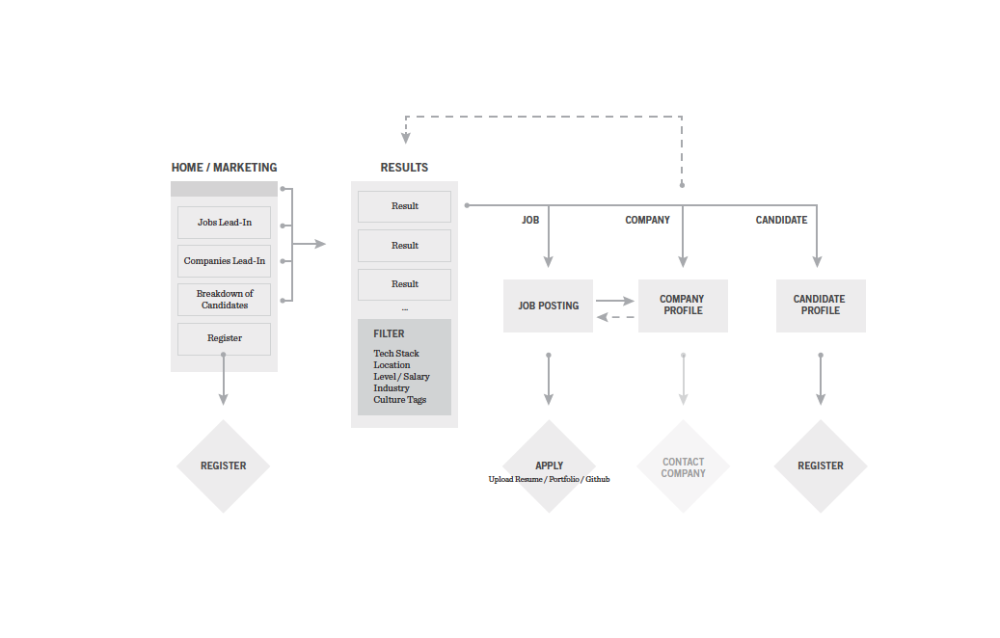

Getting Down to Business
The client had a strong idea of their customers' needs and prioritized speed to launch so we got to work on strategy and information architecture. I started with high-level flows to orient the team around a) what each audience is looking for and b) how to most efficiently get users to their end goal of a new job or new hire.
The former process was completely manual – a company would provide requirements, then our client would help to fill in gaps with the job posting and then begin the hunt for possible candidates if they didn't already have contact with prospects who fit the bill. Putting the job postings online would allow them to capture a broader pool of applicants who were already on the hunt for themselves. At the time there were few job search sites that catered directly to tech professionals. We saw an opening to provide this audience with sophisticated tools to hone in on the best jobs for them.
The high-level site flow ensured that both candidates and companies were prioritized equally and would be encouraged to apply for a given job and/or register to create a profile with our client.
